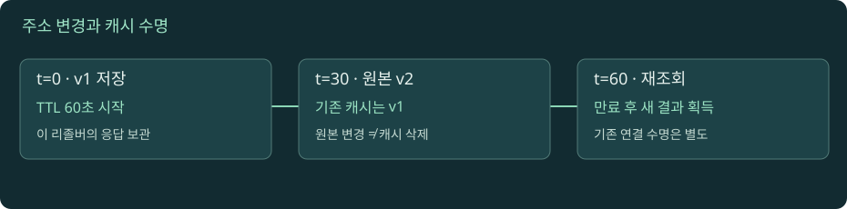

DNS 운영: 캐시와 변경의 시간차
같은 도메인이 사람마다 다른 주소로 보이는 현상을 TTL과 관찰 지점으로 설명한다.

주소 변경과 TTL 만료 실험
자바스크립트를 켜면 실험을 조작할 수 있습니다. 아래 본문·도식·실습은 그대로 읽을 수 있습니다.
01. 01 · 캐시는 여러 층에 있고 소유자도 다르다
이름 해석 결과는 애플리케이션, 브라우저, 운영체제, 전달 리졸버, 재귀 리졸버에 남을 수 있다. 모든 제품이 같은 계층과 같은 보관 정책을 갖는 것은 아니다. 핵심은 어느 관찰 지점의 답을 보고 있는가다. 권한 서버를 바꾼 뒤 노트북 캐시를 지워도 회사 리졸버에 남은 응답까지 동시에 사라지지 않는다.
교육용 상황을 만들자. 권한 서버는 새 주소 B를 제공한다. 회사 리졸버에는 이전 주소 A가 남아 있고 휴대전화의 리졸버에는 캐시가 없다. 두 사용자가 동시에 조회해도 서로 다른 답을 받을 수 있다. 이것은 서로 모순되는 측정이 아니라 서로 다른 상태를 측정한 것이다. 기록에는 시간과 질의 서버를 함께 적어야 한다.
운영에서 캐시를 무조건 나쁜 것으로 보면 해결 방향이 틀어진다. 캐시는 반복 조회 지연과 권한 서버 부하를 줄인다. 대신 변경이 즉시 모든 독자에게 보이지 않는 비용이 생긴다. DNS 변경 작업은 새 주소의 정합성만 확인하는 작업이 아니라 기존 답을 보유한 독자와 새 독자가 일정 시간 함께 존재하는 상황을 설계하는 작업이다.
02. 02 · TTL을 전파 완료 카운트다운으로 읽지 않기
TTL은 응답 데이터를 캐시에 얼마나 보관할 수 있는지에 관한 정보다. 'DNS 설정을 바꾸면 TTL초 후 전 세계 모든 사람이 동시에 바뀐다'는 예약 시간이 아니다. 캐시들은 서로 다른 시각에 데이터를 받는다. 하나는 막 이전 답을 받았고 다른 하나는 만료 직전일 수 있다. CNAME·주소·NS 정보가 각각 다른 TTL을 가질 수도 있다.
직접 계산해 보자. 이전 TTL이 3600초였고 어떤 리졸버가 09:59에 A를 캐시했다. 10:00에 원본에서 TTL을 60초로 낮춰도 그 리졸버가 이미 가진 A의 남은 시간이 자동으로 60초로 바뀌지는 않는다. 변경을 계획한다면 기존 TTL에 해당하는 시간을 고려해 미리 낮추고, 낮은 TTL이 충분히 관찰된 뒤 주소를 바꾼다. 조직별 캐시 정책과 연결 재사용도 확인해야 한다.
따라서 '지금 원본 TTL이 60이니 1분 뒤 완전 전환'은 근거가 부족하다. DNS 리졸버의 규칙과 DNS 밖의 애플리케이션 캐시, 이미 열린 연결을 분리한다. 기존 주소를 너무 일찍 내리면 새 답을 못 받은 사용자의 접속이 끊긴다. TTL은 변경 계획의 입력이지 서비스 종료를 보장하는 단독 신호가 아니다.
03. 03 · 성공 응답도 실패 응답도 캐시된다
새 이름을 만들기 전에 사용자가 그 이름을 조회하면 '없다'는 답을 받을 수 있다. 관리자가 잠시 뒤 레코드를 추가했는데도 사용자에게 계속 없다고 보인다면 음성 캐시를 의심한다. A 레코드의 TTL만 확인해서는 이 대기 시간을 설명하지 못한다.
NXDOMAIN은 이름이 없다는 결과다. NODATA는 이름이 존재할 수 있지만 질의한 타입의 데이터가 없다는 결과로, DNS 응답 코드 자체가 NODATA인 것은 아니다. 흔히 NOERROR와 빈 답, 관련 SOA 정보의 조합을 해석한다. 주소 없음과 이름 없음이 다르므로 AAAA 답이 비어도 A 조회를 별도로 해야 한다. RFC 2308은 NXDOMAIN·NODATA와 음성 캐시의 관계를 정의한다.
음성 캐시 TTL을 정할 때는 SOA의 TTL과 MINIMUM 값을 함께 본다. 표준에서 권한 응답에 실리는 음성 캐시 시간은 두 값의 최솟값을 바탕으로 정해진다. 예를 들어 설명용 SOA TTL 900, MINIMUM 300이라면 음성 캐시의 기준은 300초다. 실제 출력은 남은 시간이 줄어든 상태일 수 있다. 양성 레코드를 방금 추가한 사실과 각 리졸버가 그 사실을 관찰한 시각을 구분하자.
04. 04 · SERVFAIL과 timeout은 NXDOMAIN이 아니다
SERVFAIL은 해석을 성공적으로 마치지 못했다는 응답이다. 권한 서버 접근 장애, DNSSEC 검증 실패, 잘못된 위임, 서버 내부 문제 등 여러 가설이 있다. 이것만으로 '레코드가 삭제됐다'고 단정하지 않는다. timeout은 정해진 시간 안에 응답을 관찰하지 못한 상황이며 DNS의 NXDOMAIN 응답과도 다르다.
실패한 해석을 짧게 캐시하는 동작도 있다. 반복되는 실패를 매번 전체 탐색으로 증폭하지 않도록 하기 위해서다. RFC 9520은 해석 실패의 캐싱을 다룬다. 따라서 '오류를 고쳤으니 다음 질의는 반드시 즉시 성공'이라는 가정도 확인이 필요하다. 실패 종류와 리졸버의 정책을 기록해야 한다.
진단 순서를 세우자. 먼저 요청한 리졸버가 실제로 응답하는지 확인한다. 다음으로 권한 서버에 직접 같은 이름과 타입을 묻는다. 권한 서버는 정상인데 특정 리졸버만 실패하면 캐시·검증·경로 범위를 좁힌다. 모든 곳이 같은 오류면 원본 데이터와 위임을 더 먼저 살핀다. 진단을 위해 보안 검증을 끈 결과는 원래 조건에서 정상이라는 증거가 아니라 가설을 구분하는 보조 관찰이다.
05. 05 · split DNS: 하나의 이름에 여러 관점
사내 VPN에서 api.example.test는 사설 주소를, 외부에서는 공용 주소를 반환하도록 설계할 수 있다. 이를 split DNS 또는 split-horizon 구성이라고 부른다. 이름이 같아도 요청자의 네트워크, 사용한 리졸버, 정책에 따라 다른 답을 주는 구성이다. 이 경우 다른 결과 자체는 결함이 아니다. 의도한 관점이 적용됐는지가 기준이다.
교육용 사례를 보자. 개발자는 VPN에 접속했지만 브라우저가 외부 DoH 리졸버를 사용한다. 터미널의 시스템 이름 해석과 브라우저의 결과가 다르다. 또는 컨테이너가 호스트와 다른 DNS 설정을 사용한다. '내 PC에서는 정상'이라는 말에는 프로세스·네임스페이스·리졸버·VPN 상태가 빠져 있다. 같은 호스트에서도 관찰 지점이 달라질 수 있다.
내부 이름을 확인하려고 임의의 공용 리졸버로 바꾸는 것은 진단 조건 자체를 바꾼다. 공용 리졸버가 내부 주소를 모르는 것은 정상일 수 있다. 먼저 운영체제가 실제로 사용하는 설정과 애플리케이션의 별도 설정을 확인하고 회사가 허용한 경로에서 비교하자. 용어와 모델은 RFC 9499에 정리되어 있다.
06. 06 · DNS 전환은 연결을 이사시키지 않는다
웹 클라이언트는 한 번 만든 연결로 여러 HTTP 요청을 보낼 수 있다. DNS가 A에서 B로 바뀌어도 이미 A와 연결한 세션이 B로 순간 이동하지 않는다. 새 연결을 만들 때 조회하거나 저장된 주소를 다시 사용한다. 이 때문에 DNS 조회 결과는 B인데 일부 트래픽이 A에 계속 들어올 수 있다.
예시 전환 일정을 만들어 보자. 1단계에서는 B의 인증서·라우팅·애플리케이션 상태를 준비한다. 2단계에서는 미리 TTL을 낮춘다. 3단계에서 원본을 B로 바꾸고 여러 리졸버에서 관찰한다. 4단계에서는 A와 B의 실제 요청 로그를 확인하면서 연결을 점진적으로 정리한다. 5단계에서 A의 종료 조건을 판단한다. DNS 조회만으로 4단계와 5단계를 생략할 수 없다.
롤백도 즉시성이 없다. B에 문제가 생겨 A로 되돌려도 B를 캐시한 사용자는 남는다. 따라서 짧은 TTL만으로 복구 전략을 완성했다고 생각하지 말자. 예전 주소에서 새 서비스로 안전하게 이어주거나 두 환경이 한동안 공존하도록 설계하면 DNS의 비동시성과 애플리케이션의 장기 연결을 함께 다룰 수 있다.
07. 07 · dig와 애플리케이션 관찰은 서로 보완한다
dig는 DNS 질의 도구다. 운영체제의 모든 이름 해석 규칙을 그대로 재현하는 범용 애플리케이션 실행기는 아니다. hosts 파일, 검색 접미사, 브라우저 DoH, 프록시의 원격 이름 해석, 애플리케이션별 캐시 때문에 dig와 앱 결과가 다를 수 있다. 시스템 리졸버를 쓰는 실제 프로그램의 결과도 함께 비교해야 한다.
macOS에서는 scutil --dns로 설정된 해석 경로를 보고 dscacheutil -q host -a name example.com으로 시스템 해석 결과를 관찰할 수 있다. Linux에서는 환경에 따라 getent ahosts example.com, systemd-resolved를 쓰는 경우 resolvectl query example.com이 유용하다. 명령이 없는 운영체제나 다른 리졸버 환경에서 그대로 실행된다고 가정하지 않는다.
출력 비교는 같은 조건에서 해야 한다. 질의 시각, 연결한 VPN, 실행한 컨테이너, 지정한 서버를 기록한다. +trace는 로컬에서 외부 권한 서버로 직접 질의할 수 있어야 하므로 회사 리졸버를 통한 조회는 성공하지만 +trace는 차단될 수 있다. 도구 하나의 실패가 서비스 전체 실패라는 결론으로 이어지지 않도록 관찰 범위를 적어 둔다.
08. 08 · 캐시가 만료됐는데 오래된 답을 줄 수도 있을까
일반 모델에서는 TTL이 지나면 새로 확인한다. 그러나 권한 서버 장애 동안 가용성을 높이기 위해 조건에 따라 만료된 데이터를 제공하는 serve-stale 정책도 있다. 이것은 TTL 개념이 무의미하다는 뜻이 아니라, 구현과 운영 정책이 정상 경로 이외의 동작을 정의할 수 있다는 뜻이다. RFC 8767은 이러한 복원력 동작을 다룬다.
교재의 캐시 실험은 TTL이 끝나면 원본을 다시 확인하는 단순 모델이다. 실제 장애 분석에서는 리졸버 제품과 정책까지 확인해야 한다. 'TTL이 0이었으니 오래된 주소일 수 없다'고 단정하면 장애 시의 예외 경로를 놓칠 수 있다. 반대로 오래된 답을 봤다는 사실만으로 serve-stale을 확정하지도 않는다. 일반 캐시, 다른 원본, 애플리케이션 저장, 기존 연결이라는 가설이 먼저 남아 있다.
DNS 운영의 목표는 용어를 많이 말하는 것이 아니라 관찰을 재현하는 것이다. 누가 언제 어떤 서버에 어떤 이름·타입을 물었고 무엇을 받았는지 남긴다. 원본 변경 시각, 이전 TTL, 실제 서비스 로그를 한 시간축에 올리면 '전파가 느리다'는 막연한 표현을 구체적인 독자별 상태로 바꿀 수 있다.
실습 · 캐시의 시간과 실패 유형 기록하기
인터넷 조회 값은 고정 정답이 아니다. .test 예시는 시뮬레이터용이며 공개 DNS에서 실제 주소를 기대하지 않는다.
dig example.com A +noall +answer를 두 번 실행하고 각 시각과 TTL을 기록한다. 같은 캐시에서 답하면 감소를 관찰할 수 있지만 캐시 분산·갱신 때문에 증가하거나 달라질 수도 있다. 반드시 일정하게 감소한다고 단정하지 않는다.dig example.com AAAA를 실행한다. 성공 코드와 데이터 존재 여부를 따로 적는다. NOERROR와 답의 부재를 NXDOMAIN으로 바꾸어 기록하지 않는다.dig no-such-host-for-network-study.example.com A를 실행한다. 없는 이름으로 의도한 조회이지만 실제 결과를 직접 확인한다. NXDOMAIN이라면 AUTHORITY 영역의 SOA와 TTL을 기록한다.dig example.com NS +short의 관찰값으로 권한 서버를 선택한 뒤dig @<NS호스트> example.com A +norecurse를 실행한다. 리졸버 답과 원본 답을 비교한다.- macOS면
scutil --dns를, Linux면 환경에 맞는 resolver 설정 조회를 사용해 현재 해석 경로를 확인한다. 출력에 사내 이름이 있으면 공개 공유하지 말고 학습 노트에는 역할만 적는다. - 아래 교육용 시간표를 계산한다. 12:00에 A를 TTL 600으로 캐시했다. 12:02 원본을 B, TTL 30으로 변경했다. 일반 TTL 모델에서 이 캐시의 이전 답이 만료되는 시각은 12:10이다. 새 TTL 30이 이미 캐시된 이전 답의 시간을 소급해서 줄이지 않는 이유를 설명한다.
- 장애 기록 양식을 만든다.
시간 / 실행 프로세스 / VPN / 리졸버 / QNAME / QTYPE / RCODE / 답 / 남은 TTL을 채우고 '직접 관찰'과 '추정 원인'을 분리한다.
목표는 자신의 컴퓨터에서 캐시를 강제로 삭제하는 기술이 아니다. 원본과 캐시, DNS와 기존 연결, NXDOMAIN과 처리 실패를 구분하는 것이다.
로컬 실습 서버 실행과 공통 명령은 실습 안내에서 확인하세요. 실제 HTTPS·HTTP/2·HTTP/3 서버를 제공하는 실습은 아닙니다.
이해도 확인
선택 후 이유를 설명하고 정답을 확인하세요.
원전과 더 읽을 자료
표준과 공식 문서를 참고해 독립적으로 구성한 학습 설명입니다. 예시 결과와 시간은 명시한 경우를 제외하면 교육용입니다. 확인 기준: 2026-11-09.
진행률은 현재 브라우저에 저장됩니다. 파일 직접 열기와 HTTP 접속은 저장 공간이 다를 수 있습니다.